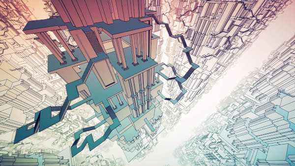

Manifold Garden

Windows, 2019
This was always going to turn my head, marrying a marvellous geometric engine to an austere, flat-shaded renderer. Bewildering portals, seamlessly disguised as humble doorways, are the simplest of its tricks. More pervasive, levels are wraparound along all three spatial dimensions, as can be seen by the disorienting arrays of geometry - the current level, infinitely repeated, offset or re-oriented - marching to the vanishing points, dwindling to infinity in all directions.
This is no mere trippy backdrop. Gravity can be trivially flipped to lie along any cardinal axis, and one will routinely step off, into a yawning, infinite abyss, to fall through the entire level, and beyond, through and amongst the infinite constellations of geometry, airsteering all the way, to land, unharmed, anywhere that's exposed to the direction you're falling from. It becomes a form of teleportation, used to get from A to B almost as frequently as simply walking around.
This non-Euclidian wrapping is baked deeply into the visuals, the engine, and the gameplay. But for all that technical mastery, the puzzles themselves aren't as deep and creative and varied as those in the ostensibly similar, but less technically accomplished, Antichamber.
Having said that, there's something entirely appropriate in this. The puzzles end up being as much rituals as a headscratchers, holy spatial rites one performs to unleash the deeply evocative visuals towards the end of each level - a faceted and angular psychadelic, coupled with unnerving reformulations of reality straight out of Farbrausch's Debris. By the final level, this crescendos in scenes reminiscent of 2001: A Space Odyssey, profound in both the intimacy of my commune with godhood, and in my continued inability to understand what I had achieved. Created a universe, probably? Yeah, probably.
Comments
Comments powered by Disqus